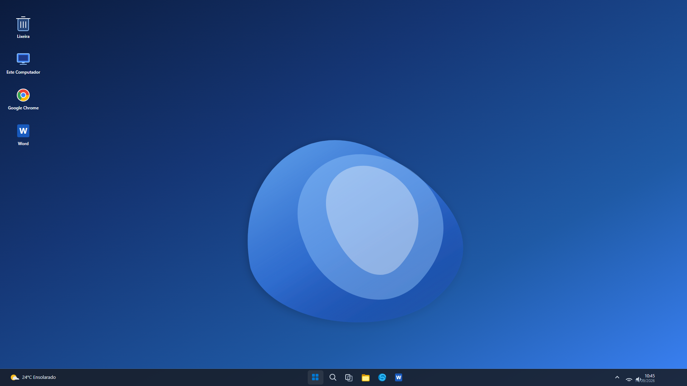

Passo 1: Clique no ícone do Menu Iniciar centralizado na barra de tarefas do Windows 11.
💡 Exemplos suportados: Ctrl + C, Ctrl + T, Alt + A, Shift + Seta a Direita, F1..F12, Shift + Delete, Ctrl + Home, Ctrl + End, Shift + Page Up, Ctrl + Shift + Alt + T.